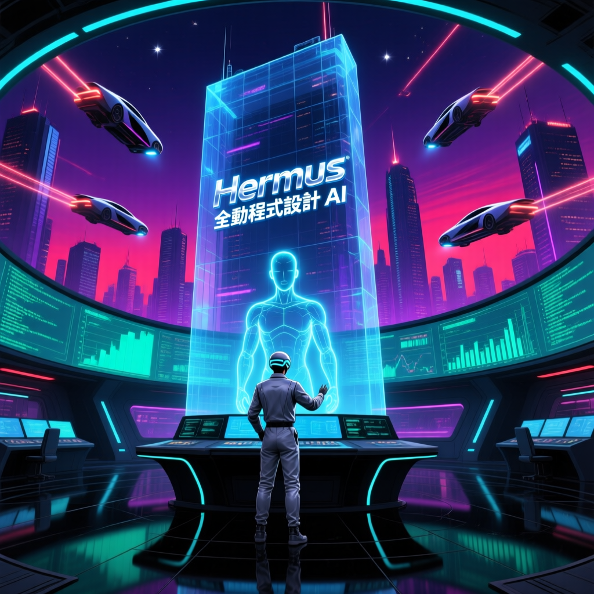

全自動程式設計與除錯 AI 代理！支援 100+ 模型、多平台遙控、記憶用戶偏好，離線也能自主執行任務！

Hermes 是一款開源的全自動程式設計 AI 代理，支援自動生成程式碼、多輪除錯、記憶用戶偏好，並可在 Discord、Telegram、Slack 等平台實現遠程遙控。
Hermes 不僅能自動生成程式碼、執行測試並進行多輪除錯，還能記憶使用者的程式設計習慣和偏好，在長期使用中變得越來越聰明和高效。
— 實測影片摘要，2026 年 4 月支援 Mac OS、Linux 和 WSL，Quick Setup 模式適合初級用戶，整個安裝過程僅需一分多鐘即可完成。
涵蓋 OpenAI、Anthropic、Hugging Face 等主流 AI 模型提供商，用戶可自由切換不同模型。
自動生成程式碼、執行測試並進行多輪除錯，無需人工干預，大幅提升開發者效率。
自動記錄使用者的程式設計習慣，如偏好 TypeScript、VIT 等，下次對話自動應用這些設定。
支援 Discord、Telegram、Slack 等平台，隨時隨地遠程控制 Hermes，即使不在電腦前也能完成任務。
在用戶離線時也能自主執行並完成任務，適用於需要長期運行後台任務的場景。
作為開源專案，Hermes 完全免費開源，用戶可自行部署並定製功能。
設定過程需要填寫 API Key 確保安全訪問，支援 Token 和 User ID 雙重驗證。
提供 Full Setup 進階模式，適合需要完整自訂的高級用戶，包含更多配置選項。
原生支援 Mac OS、Linux 及 WSL（Windows Subsystem for Linux），覆蓋主流開發環境。
實測中使用 Python 編寫天氣查詢命令行工具，從代碼生成到除錯修復全程自動完成。
支援多輪對話式除錯，能根據錯誤信息自動修正代碼，無需用戶手動干預。
| 功能 | Hermes | OpenClaw |
|---|---|---|
| 記憶用戶偏好 | ✅ 完整記憶 | ❌ 不支援 |
| 自動程式設計 | ✅ 多輪除錯 | ⚠️ 基礎功能 |
| 多平台支援 | ✅ Discord/Telegram/Slack | ⚠️ 部分支援 |
| 離線自主執行 | ✅ 支援 | ❌ 不支援 |
| 模型數量 | 100+ 模型 | 有限選擇 |
| 安裝時間 | 約 1 分鐘 | 較長 |
| 開源免費 | ✅ 完全開源 | ❌ 商業軟體 |
| 安裝平台 | Mac / Linux / WSL | 多平台 |
| 步驟 | 傳統開發 | Hermes 輔助 |
|---|---|---|
| 環境設定 | 手動配置，耗時 30 分鐘 | 自動完成，約 1 分鐘 |
| 代碼生成 | 人工編寫，需查閱文檔 | 自然語言描述，自動生成 |
| 除錯修復 | 人工排查，層層分析 | 多輪自動除錯，智能修正 |
| 偏好設定 | 每次重新配置 | 自動記憶，一鍵應用 |
| 總耗時 | 數小時 | 數十分鐘 |
| 模型提供商 | 支援狀態 | 說明 |
|---|---|---|
| OpenAI | ✅ 完全支援 | GPT-4、GPT-3.5 等全系列 |
| Anthropic | ✅ 完全支援 | Claude 3 全系列 |
| Hugging Face | ✅ 完全支援 | 開源模型生態 |
| 其他提供商 | ✅ 100+ 總計 | 涵蓋主流與小眾供應商 |
Hermes 的出現標誌著 AI 程式設計助手邁入新時代。與傳統 IDE 插件不同，Hermes 是真正的自主 AI Agent。
隨著 AI 技術的不斷進步，像 Hermes 這類全自動程式設計工具將在未來發揮越來越重要的作用。業界觀察認為，Hermes 的記憶功能和離線自主執行能力將重新定義 AI 程式設計助手的標準。對於開發者而言，學會與 AI Agent 協作將成為必備技能。
Hermes 的記憶功能是最大亮點——它不只是一個工具，而是一個會「記住你」的 AI 搭檔。結合自動程式設計、多輪除錯和多平台遙控，Hermes 有望成為未來開發者不可或缺的智能助手。